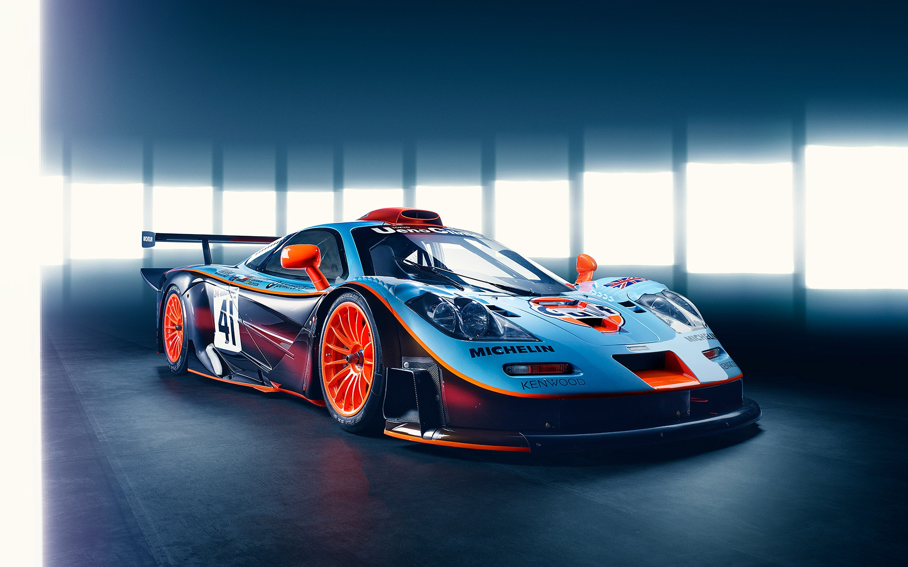

V12 6.1L naturally Aspirated
627hp
3.1s
363 km/h

On April 28th 1996 Porsche showed up at Le Mans Pre-Qualifying with a new car that went completely against the spirit, if not the letter, of the GT1 regulations
To stimulate manufacturer participation in GT racing during difficult economic times, rule makers had slashed production requirements to just a single type-approved example.
Porsche had already done rather well from selling GT2 and GT3 class 911s, but McLaren’s domination of the premier GT1 category since 1995 (powered by BMW Motorsport engines) was a position the Stuttgart firm could not allow to go unchallenged.
Whereas GT1 cars up until this point (McLaren F1, Ferrari F40, Venturi 600 LM et al) had by and large been adaptions of models created first and foremost for road use, the resultant 911 GT1 was a reverse engineered Sports Prototype with minimal concessions for type approval and no real prospect of any meaningful production run.
This is for educational purposes only